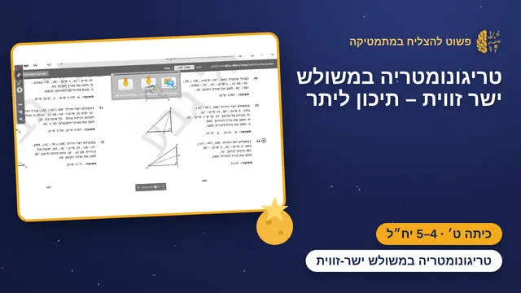

פשוט להצליח במתמטיקה › כל הנושאים › טריגונומטריה במשולש ישר-זווית
טריגונומטריה במשולש ישר-זווית – סרטוני הסבר ותרגול
4 סרטוני הסבר ותרגול בנושא טריגונומטריה במשולש ישר-זווית – לכיתה ט׳, שאלון 371, שאלון 471, שאלון 571. כל נושא מוסבר מהקל אל הקשה: קודם הרעיון, אחר כך תרגילים, ובסוף שאלות בסגנון בגרות. הכול בחינם, בשיטת "פשוט להצליח".
רוצים לעקוב אחרי ההתקדמות?נרשמים בחינם, וכל סרטון שראיתם מסומן ✓. ממשיכים מכל מכשיר.
הצטרפות בחינם ←טריגונומטריה במשולש ישר-זווית – כיתה ט׳ כל הנושאים של כיתה ט׳ ←
 טריגונומטריה במשולש ישר זווית – חוצה זווית ותיכון
טריגונומטריה במשולש ישר זווית – חוצה זווית ותיכון
טריגונומטריה במשולש ישר זווית – תיכון ליתר טריגונומטריה במשולש ישר זווית – sin, cos, tan
טריגונומטריה במשולש ישר זווית – sin, cos, tanטריגונומטריה במשולש ישר-זווית – שאלון 371 כל הנושאים של שאלון 371 ←
טריגונומטריה במשולש ישר-זווית – שאלון 471 כל הנושאים של שאלון 471 ←
טריגונומטריה במשולש ישר זווית – חוצה זווית ותיכוןטריגונומטריה במשולש ישר זווית – תיכון ליתרטריגונומטריה במשולש ישר זווית – sin, cos, tan